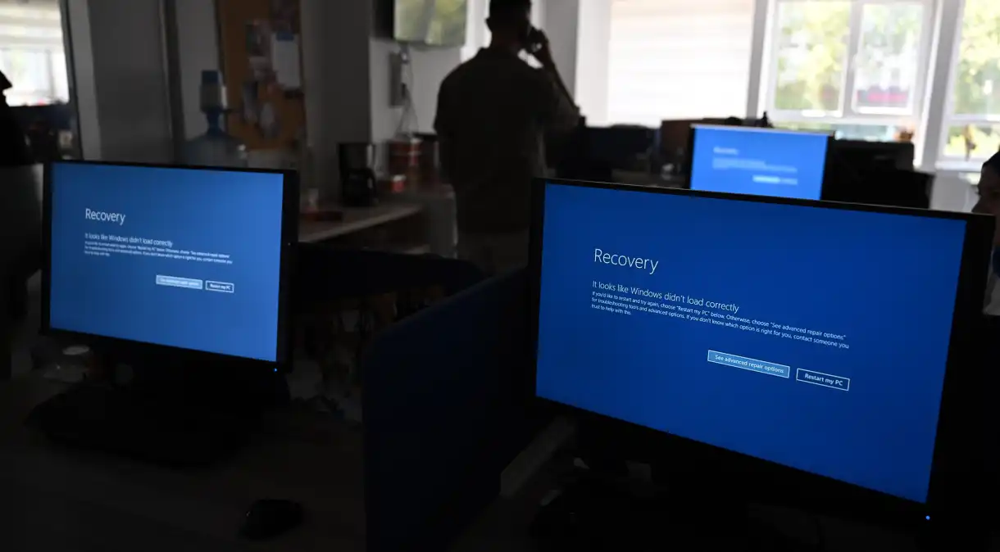

Há 55 anos, o homem pisou na Lua; quando voltaremos para o satélite?
Este sábado (20) marca o aniversário de 55 anos desde que o primeiro ser humano pisou na Lua com o programa Apollo, da Nasa. No entanto, mais de cinco décadas após o programa ser descontinuado, ninguém mais pisou no satélite novamente.
Ler mais

Apagão global: Brasil foi menos afetado? Especialistas respondem
Diversas empresas ao redor do mundo sofreram com um apagão cibernético nesta sexta-feira (19). O problema causado por uma atualização no software CrowdStrike, presente em produtos do Microsoft Windows, gerou atrasos em aeroportos, afetou o funcionamento de aparelhos hospitalares e impactou operações em plataformas de bancos internacionais.
Ler mais
Robô da Nasa quebra rocha e revela cristais inéditos em Marte
O rover Curiosity fez sua descoberta mais incomum até agora em Marte: rochas feitas de enxofre puro. Tudo começou quando o robô de 1 tonelada passou por cima de uma rocha e a quebrou, revelando cristais amarelados-esverdeados nunca antes vistos no planeta vermelho.
Ler mais
Quem foi Neil Armstrong, primeiro humano a pisar na Lua
Há 55 anos, no dia 20 de julho, o piloto militar, piloto de testes e engenheiro aeroespacial, Neil Armstrong, se tornou o primeiro ser humano a pisar na Lua. Eram 17h17, no horário de Brasília, quando o então comandante da Apollo 11 saiu do módulo lunar, e deixou sua pegada impressa no regolito. “Esse é um pequeno passo para o homem, um salto gigante para a humanidade”, disse.
Ler mais